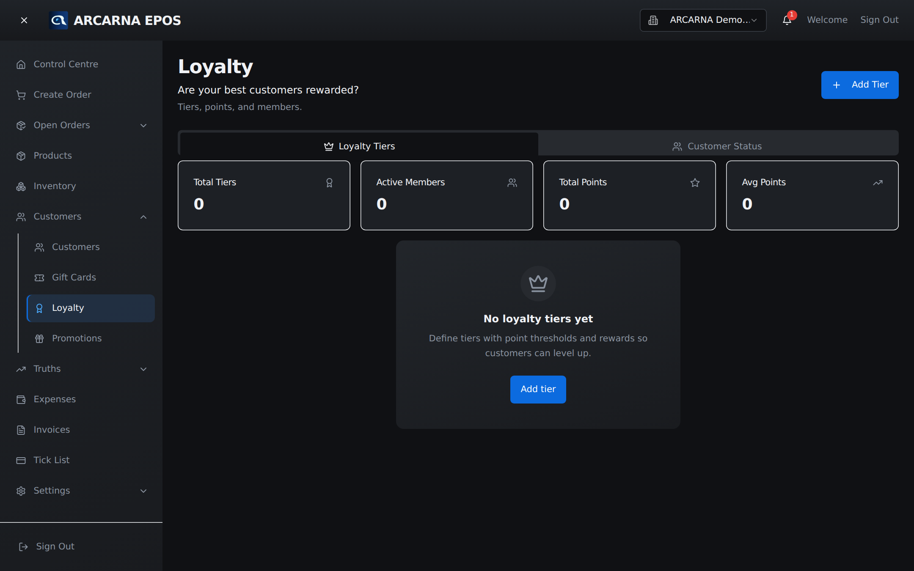
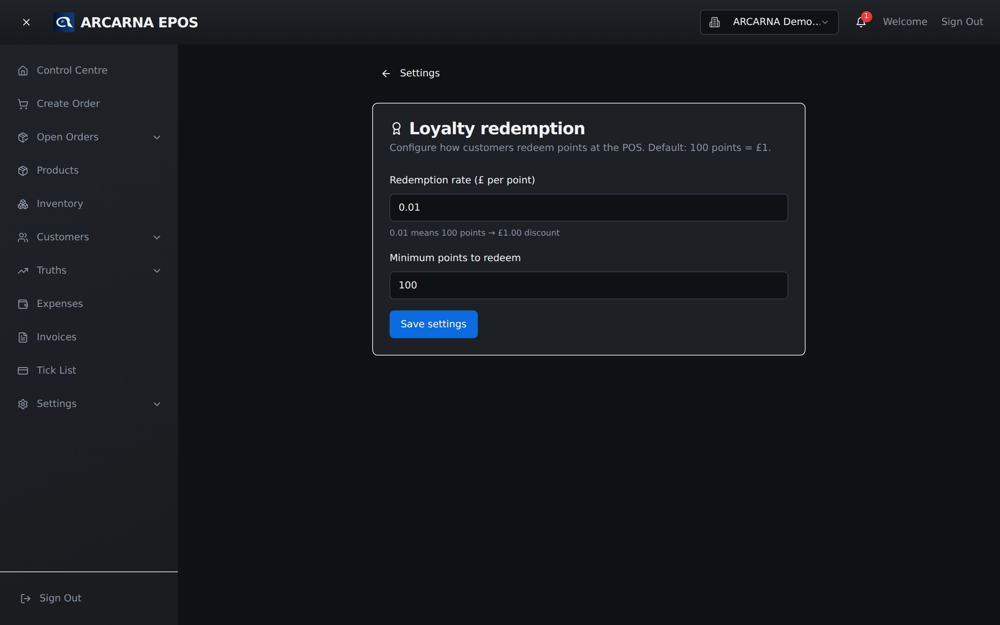

Staff training manual
Staff training manual
Rewarding the customers who come back — points earned on what they spend, and tiers that recognise your regulars. Cashiers apply it at the till; managers set the rules. CASHIER MANAGER
The idea
How loyalty works
Loyalty gives your regular customers a reason to keep choosing you. As they spend, they earn points; those points can be redeemed against a future purchase. Spend enough over time and a customer moves up a tier, which can carry its own recognition or benefits. It all attaches to the customer record from Section 6, so the more you use named customers at the till, the more the scheme works.

At the till
Earning points on a sale
Points are earned automatically when a sale is rung up against a named customer. There's nothing extra for the cashier to do — as long as the customer is attached to the order (Section 3), the points are added when the sale completes. If a sale is put through as a walk-in, no points are earned, because there's no customer to credit.
At the till
Redeeming points
When a customer wants to spend their points, it happens during checkout:
- Attach the customer to the order so their points balance is known.
- At checkout, choose to redeem points. arcarna shows how many they have and what they're worth.
- The redemption comes off the total as a discount. Complete the sale as normal.
- Their balance is reduced by the points used, and the order records what was redeemed.
Recognising regulars
Tiers
Tiers are bands your customers move through as their loyalty builds — for example Bronze, Silver, Gold. A tier is a simple, visible way of recognising your best customers, and it lines up with the customer groups you saw in the Truths (Section 8): your Champions and Loyal customers are usually your higher tiers. What each tier is called and what it earns is set by a manager.
Setting the rules
Configuring loyalty (manager)
Open Settings → Loyalty to set up the scheme: how points are earned, what they're worth when redeemed, and the tiers and their thresholds. Set it once, sensibly, and it runs itself at the till from then on.
